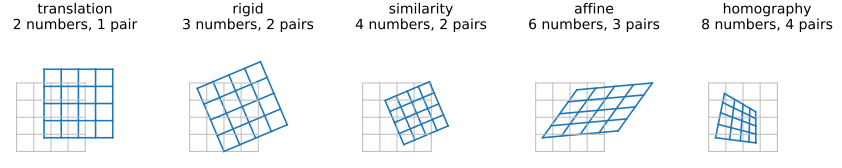
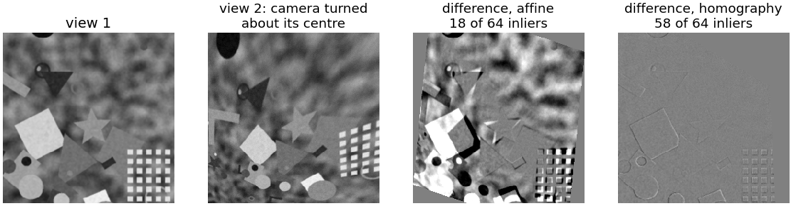
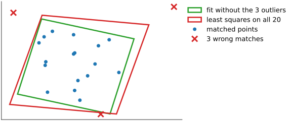
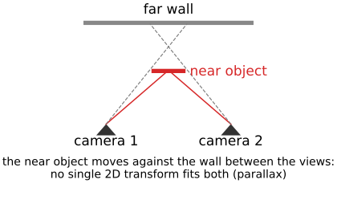
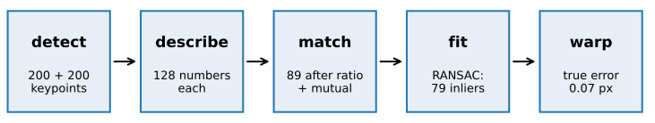

From matches to a transform: RANSAC, stitching and registration
Image analysis
About this lecture
The matching unit left us with pairs of points, most of them right, some wrong. Now we find the transform that maps image 2 onto image 1, and ignore the wrong pairs.
Which transform? Translation, rigid, similarity, affine, homography: degrees of freedom and pairs needed.
Fitting to clean pairs by least squares, and why one wrong pair ruins it.
RANSAC (recall, Hough day) on matches: how many iterations, choosing ε, checking the result.
Uses: stitching tiles and panoramas, registration (features vs intensities), and a pointer to geometry from images.
Slides titled The math give the formulas and proofs; the ideas are complete without them.
From the matched pairs, the transform from image 2 to image 1, ignoring the wrong pairs. Check: warp image 2 onto image 1 and show them as a checkerboard: seams vanish when the transform is right.
Which transform?

model
numbers
pairs
keeps
typical case
translation
2
1
everything but position
stage, tiles
rigid
3
2
lengths, angles
remounted slide
similarity
4
2
angles, length ratios
+ magnification
affine
6
3
parallel lines
shear
homography
8
4
straight lines
plane at an angle; turning camera
As simple as the physics allows
Choose the model from what the scene and the camera can do, not from the data.
A microscope stage: translation (plus rotation if the sample was remounted). Serial sections: rigid or similarity, then non-rigid. A poster photographed from an angle, a panorama from a tripod: homography.
More freedom fits more noise, needs more pairs per RANSAC sample, and extrapolates worse outside the matched area.
Try it: the transform zoo
The homography
A 3 × 3 matrix on homogeneous coordinates (x, y, 1) (images unit), defined up to scale: 8 numbers, 4 point pairs. Straight lines stay straight; parallel lines may meet.
It maps the image of a plane seen by one camera to its image seen by another.
It relates any two images taken by a camera turning about its centre (no parallax): this is why panoramas work. Derivation: cameras; pure rotation: two views.

Fitting clean pairs: least squares
Every pair gives two equations (x and y).
Translation: the mean of the differences.
Similarity: closed form: centre both point sets, best rotation from an SVD, scale from the spread (Procrustes, shape models).
Affine: 6 unknowns, linear least squares.
Homography: also linear after multiplying out the division (the DLT), with normalised coordinates.
But one wrong pair pulls them all: right, 3 wrong matches among 20 skew the affine fit visibly.

The math: the transform hierarchy
In homogeneous coordinates (\mathbf x' \simeq T\mathbf x, equal up to scale):
\text{translation } \begin{pmatrix} I & \mathbf t\\ \mathbf 0^\top & 1\end{pmatrix},\quad \text{similarity } \begin{pmatrix} sR & \mathbf t\\ \mathbf 0^\top & 1\end{pmatrix},\quad \text{affine } \begin{pmatrix} A & \mathbf t\\ \mathbf 0^\top & 1\end{pmatrix},\quad \text{homography } H \in \mathbb R^{3\times3}/\text{scale}.
Invariants: rigid keeps lengths; similarity angles and ratios of lengths; affine parallelism and ratios of lengths along a line; homography collinearity and the cross-ratio of four points on a line.
Affine least squares: x' = a_{11}x + a_{12}y + t_x, y' = a_{21}x + a_{22}y + t_y. Stacked, M\mathbf a = \mathbf b with M of size 2n \times 6; it splits into two n \times 3 problems with the same matrix (rows [x_i, y_i, 1]), solved by the normal equations.
Similarity (Procrustes): centre both sets, C = \sum\mathbf y_i\mathbf x_i^\top = U\Sigma V^\top, R = U\,\mathrm{diag}(1, \det UV^\top)V^\top, s = \operatorname{tr}(\Sigma\,\mathrm{diag}(1, \det UV^\top))/\sum\|\mathbf x_i\|^2, \mathbf t = \bar{\mathbf y} - sR\bar{\mathbf x}.
The math: the homography (DLT)
\mathbf x' \simeq H\mathbf x means \mathbf x' \times H\mathbf x = \mathbf 0. With \mathbf h the 9 entries of H, each pair gives two independent linear rows (the third is a combination): \begin{pmatrix} \mathbf 0^\top & -\mathbf x^\top & y'\mathbf x^\top \\ \mathbf x^\top & \mathbf 0^\top & -x'\mathbf x^\top\end{pmatrix}\mathbf h = \mathbf 0 .
Stack n \ge 4 pairs: A\mathbf h = \mathbf 0, A of size 2n \times 9; \mathbf h = the right singular vector of the smallest singular value.
Normalise both point sets first (centroid at 0, mean distance √2), fit \hat H, undo: H = T'^{-1}\hat HT.
The DLT minimises an algebraic error, not a distance in pixels: refine on the transfer error\sum\|\mathbf x'_i - H(\mathbf x_i)\|^2 by Gauss–Newton (as in spot fitting).
A camera turning about its centre: \mathbf x \simeq K\mathbf X, \mathbf x' \simeq KR\mathbf X, so \mathbf x' \simeq KRK^{-1}\mathbf x: a homography.
Recall: RANSAC
From the RANSAC unit of the Hough day: guess and check.
Pick a minimal sample: s pairs (1 for a translation, 2 for a similarity, 3 affine, 4 homography).
Fit exactly to the sample.
Map all points of image 2 and count the pairs that land within ε px of their partner: the inliers.
Keep the transform with the most inliers; refit by least squares on its inliers.
Number of iterations for success probability p: N = \log(1 - p)/\log(1 - w^s), with w the fraction of correct matches.
Try it: RANSAC on a line (recall)
The numbers that matter
Iterations N for p = 0.99:
inlier fraction w
translation s = 1
similarity s = 2
affine s = 3
homography s = 4
0.7
4
7
11
17
0.5
7
17
35
72
0.3
13
49
169
567
Simple models need few samples: one more reason to choose the simplest model.
A good ratio test raises w, which matters more than anything else: in the demo, ratio 0.7 gives w = 0.99, and a homography needs 2 iterations; with 65 % added wrong matches (w = 0.31) it needs 516.
The math: the number of iterations
Derived in the RANSAC unit (its math slide “the number of iterations”): all N samples fail with probability (1 - w^s)^N, so N \ge \log(1 - p)/\log(1 - w^s).
For small w^s: \log(1 - w^s) \approx -w^s, so N \approx -\log(1 - p)/w^s = 4.6/w^s for p = 0.99: 74 instead of 72 for w = 0.5, s = 4.
Adaptive stopping: w is unknown; start pessimistic and update w from the best inlier count so far, stopping when N(w) iterations have been done.
Try it: RANSAC on matches
Choosing ε, and checking the result
ε: a few pixels: larger than the keypoints’ position error, smaller than the scene’s structure. Too large: near-misses count as inliers and pull the refit (demo: ε = 25 px gives an RMS of 4.2 px and a true error of 2.0 px instead of 0.07). Too small: correct matches at the image borders are rejected.
After the refit, report the number of inliers and the residual (RMS distance of the inliers).
Too few inliers (say fewer than 10, or under 4 % of the matches) means “no reliable alignment”, not “a bad one”. Demo: a blurred, noisy, textureless pair gives 12 matches and 5 inliers.
Skip degenerate samples: three collinear points for an affine map, three collinear of four for a homography.
Stitching tiles and panoramas
For tiles with rotation or large unknown offsets:
match each overlapping pair of tiles, fit by RANSAC;
make the transforms consistent: chaining pairwise transforms accumulates error. Recall the tile graph and its global least squares from stitching; with rotations it stays linear for similarities, with homographies it becomes a nonlinear least squares (bundle adjustment, structure from motion).
Exposure differs between tiles: correct each tile’s gain first (one number per tile, from the overlaps); blending only hides what is left.
Feathering: weights falling linearly to zero at each tile’s edge; a weighted average in the overlaps. Simple, but blurs where the tiles disagree slightly.
Multi-band blending: split each tile into the levels of its Laplacian pyramid (scale space); blend coarse levels over a wide zone and fine levels over a narrow one; collapse. Smooth exposure transitions, sharp detail.
Try it: a mosaic
The math: global alignment and multi-band blending
Tiles with similarities S_k(\mathbf p) = \begin{pmatrix} a_k & -b_k\\ b_k & a_k\end{pmatrix}\mathbf p + \mathbf t_k (tile → world, S_0 = identity). Every inlier pair (\mathbf p \in tile i, \mathbf q \in tile j) gives S_i(\mathbf p) - S_j(\mathbf q) = \mathbf 0: two equations, linear in (a, b, \mathbf t). One least-squares solve uses all pairs at once; the redundant overlaps average out the errors that a chain accumulates.
With homographies the same idea is nonlinear: minimise \sum\|H_i\mathbf p - H_j\mathbf q\|^2 (after the division) by Gauss–Newton or Levenberg–Marquardt.
Multi-band blending: Laplacian pyramids L^{(k)}_\ell of the tiles, Gaussian pyramids G^{(k)}_\ell of their masks (1 where tile k is chosen); blend level by level, B_\ell = \sum_k G^{(k)}_\ell L^{(k)}_\ell / \sum_k G^{(k)}_\ell, and collapse. Level \ell is blended over a zone about 2^\ell pixels wide.
rotation, zoom, perspective, large offsets, small overlap, occlusion
fails
rotation, zoom (without extensions), small overlap
empty or repetitive images; different modalities
Common practice: features for the rough transform, then intensity-based refinement (template matching, non-rigid registration). Repetitive texture defeats both, in different ways.
Registration in practice
Serial sections: each section to its neighbour, rigid or similarity by features + RANSAC, then a non-rigid refinement; global consistency over the stack as for tiles.
Time-lapse with drift and rotation: each frame to a key frame, not only to its predecessor (recall drift: chaining accumulates error). Moving cells are outliers; the static background gives the transform.
Correlative overviews (light and electron microscopy): few keypoints match across modalities, so a handful of manual landmarks and the same least-squares fits.
Image libraries call the whole pipeline “feature-based registration” or “panorama stitching”.
Geometry from multiple images
Two views of a 3D scene from different positions do not obey any 2D transform: near and far points move differently (parallax).
Instead, every correct match lies on an epipolar line; RANSAC fits the fundamental matrix (7 or 8 pairs per sample): two views.
A homography that fits almost all matches flags the degenerate cases: a flat scene, or a camera that only turned.

Summary

Choose the simplest model the physics allows: translation, rigid, similarity, affine, homography (2 to 8 numbers, 1 to 4 pairs).
Least squares fits clean pairs; one wrong pair ruins it.
RANSAC: minimal sample, exact fit, count inliers within ε, keep the best, refit. N = \log(1 - p)/\log(1 - w^s): few iterations for simple models and good matches.
Report inliers and residual; too few inliers = no alignment.
Stitching: pairwise fits made consistent by a global least squares; correct exposure, then feather or multi-band blend.
Features for large and rotated displacements, intensities for precision; 3D scenes need epipolar geometry.